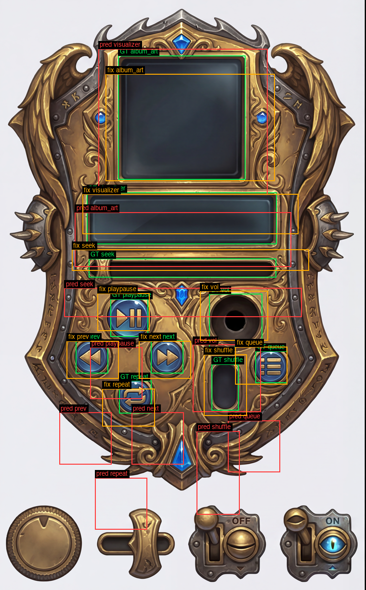
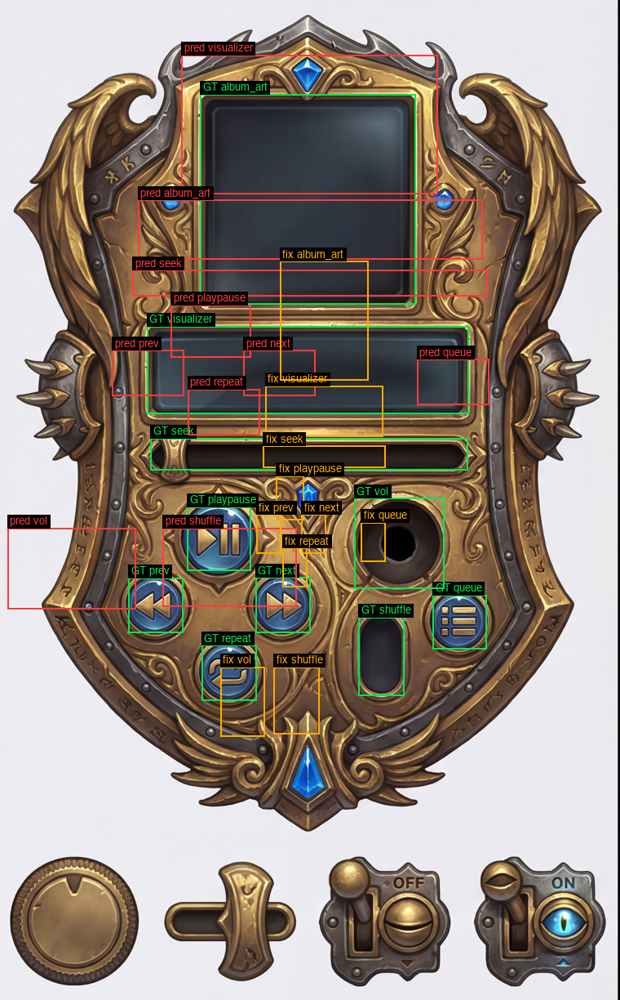
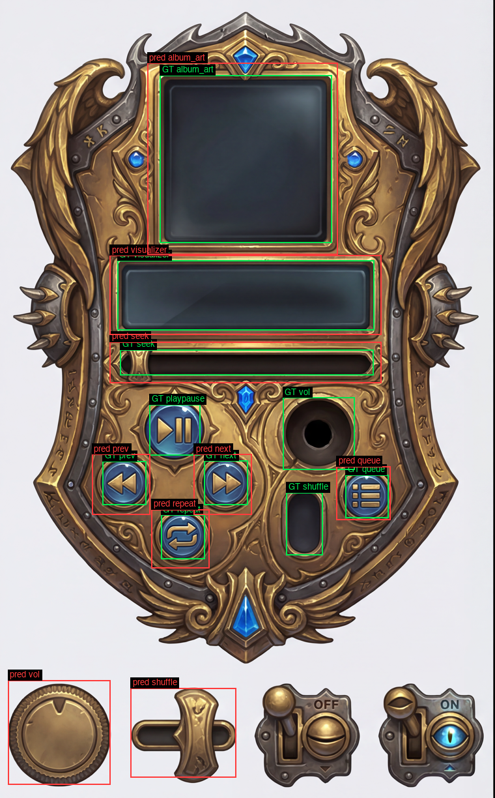
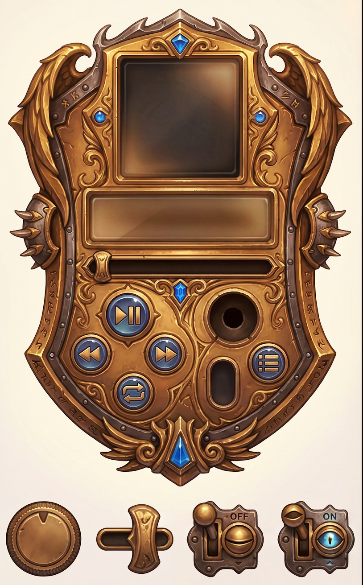

gemini-3-pro-image-preview output usable JSON?→ guided walkthrough of this eval (explain.html) — start here if you weren't in the room for this experiment.
| Config | Documented (live docs, 2026-07-11) | Observed (Vertex, this run) |
|---|---|---|
responseModalities: ["TEXT"] alone | not stated for this model | HTTP 400 "The request is not supported by this model" — TEXT-alone rejected |
["IMAGE"] alone, JSON-only prompt | — | HTTP 200 but finishReason NO_IMAGE, zero parts, burns ~3.1k thinking tokens |
["TEXT","IMAGE"], JSON-only prompt | ai.google.dev: gemini-3-pro-image "can generate interleaved content — text blocks and illustrations inside the same response" | works — 11 text parts, 0 image parts, parseable JSON (after part-joining fix, see §2) |
["TEXT","IMAGE"], JSON + re-render ask |
works — 15 text parts + 1 image part (814×1312 re-render, same aspect as input) in ONE response | |
image model + responseMimeType/responseSchema | not stated | {"mime_only": "vertex(s3_mime_only) HTTP 400: {\n \"error\": {\n \"code\": 400,\n \"message\": \"Parameter r", "mime_plus_schema": "vertex(s3_mime_plus_schema) HTTP 400: {\n \"error\": {\n \"code\": 400,\n \"message\": \"Para"} |
text parts at arbitrary byte boundaries — observed mid-number splits ("0." | "3597"). Join with "", never "\n", or the JSON corrupts.[/{) is mandatory. The text model with responseMimeType returns one clean part, no narration.| Test | parse | matched | mean IoU | median IoU | mean center err | after frame-rescue (IoU / ctr-err) | worst |
|---|---|---|---|---|---|---|---|
| A — image model, JSON-only ask gemini-3-pro-image-preview responseModalities ["TEXT","IMAGE"] |
✓ | 10/10 | 0.0029 | 0.0 | 507.1 px | 0.5337 / 49.2 px | album_art |
| B — image model, JSON + re-render interleaved gemini-3-pro-image-preview responseModalities ["TEXT","IMAGE"] |
✓ | 10/10 | 0.024 | 0.0 | 788.6 px | 0.0447 / 384.5 px | visualizer |
| C — text model (director), same ask gemini-3.1-pro-preview responseMimeType application/json |
✓ | 9/10 | 0.4994 | 0.562 | 339.9 px | 0.0516 / 392.2 px | vol |
Frame-rescue diagnosis: test A's raw boxes are near-zero IoU not because the geometry is noise —
x comes back at scale 0.999 but y in a compressed frame (best-fit gt = 0.66·pred + 0.12, residual RMS ≈ 19 px over the 8
unambiguous controls). After a least-squares affine + undoing a visualizer/album_art label swap, A hits mean IoU 0.53 / 49 px —
i.e. the image model sees the layout fine but reports normalized coords against some internal preprocessed frame,
unusable without per-image calibration you'd need ground truth to compute. B (interleaved) stays broken even after rescue
(0.04 IoU) — asking for an image in the same call destroys box quality. C (text model) is already frame-correct; its two big
misses are the vol/shuffle sprite-strip ambiguity (boxed the bottom-strip sprite instead of the device socket — a prompt
defect, not spatial noise) plus one dropped field (playpause returned without h).



h field.
| arm | parse ok | all fields valid | name/font picks |
|---|---|---|---|
| prose | 3/3 | 3/3 | Benthic Bell/Kelly Slab; Chrome Fin/Righteous; Magma Altar/Cinzel |
| schema | 3/3 | 3/3 | Abyssal Helm/Pirata One; Pastel Jukebox/Pacifico; Obsidian Altar/Cinzel |
| arm | rows usable | mean IoU (all) | mean ctr err (all) | mean IoU (unambig.) | mean ctr (unambig.) | max ctr (unambig.) |
|---|---|---|---|---|---|---|
| C — prose ask + responseMimeType (current pattern) | 9/10 | 0.4994 | 339.9 px | 0.642 | 13.2 px | 22.3 px |
| s2 — + responseSchema (enum'd names, all fields required) | 10/10 | 0.4421 | 306.4 px | 0.5527 | 12.6 px | 30.6 px |
| s4 — fenced-JSON task spec in prompt, no schema | 10/10 | 0.4548 | 295.6 px | 0.5685 | 13.1 px | 20.3 px |
All three arms are equal on centers (~13 px mean) over the unambiguous controls — schema enforcement and
JSON-shaped prompts neither help nor hurt spatial quality. What responseSchema DOES buy: field completeness
(10/10 rows with all 5 keys; the prose arm dropped playpause's h, silently shrinking it to 9/10 usable) — and it
did so without the enum/required constraints degrading anything. All three arms share the same vol/shuffle sprite-strip
ambiguity (a prompt defect: those controls appear twice in the paint — the fix is a prompt clause, not structure).
{
"mime_only": {
"accepted": false,
"error_verbatim": "vertex(s3_mime_only) HTTP 400: {\n \"error\": {\n \"code\": 400,\n \"message\": \"Parameter response_mime_type is not supported for generating image response.\",\n \"status\": \"INVALID_ARGUMENT\"\n }\n}\n"
},
"mime_plus_schema": {
"accepted": false,
"error_verbatim": "vertex(s3_mime_plus_schema) HTTP 400: {\n \"error\": {\n \"code\": 400,\n \"message\": \"Parameter response_mime_type is not supported for generating image response.\",\n \"status\": \"INVALID_ARGUMENT\"\n }\n}\n"
}
}
Identical scores to prose (table above): mean ctr 13.1 px vs 13.2 px. No adherence gain, no loss, on this extraction task. Paint-generation-side structured prompts NOT tested (needs image gens, out of budget) — untested, not refuted.
box_2d the boxes are real
(mean IoU 0.37–0.79 per call) but the element ORDER is unstable call-to-call and whole-control swaps persist, so
"NOT usable" stands (see banner at top). Interleaved
image+JSON in one call works mechanically but box quality collapses (IoU 0.02–0.04 even after rescue).